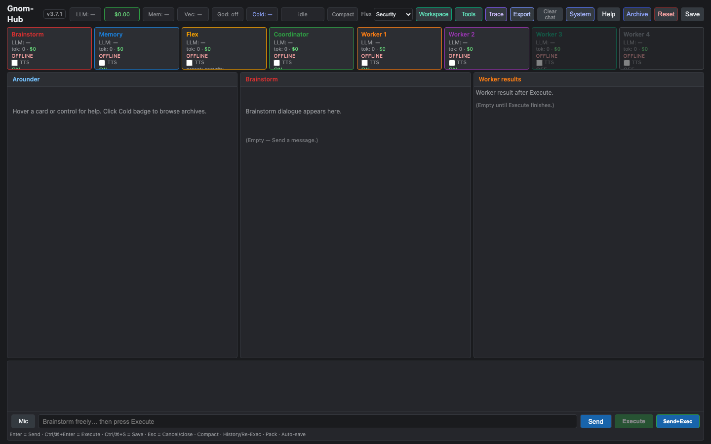
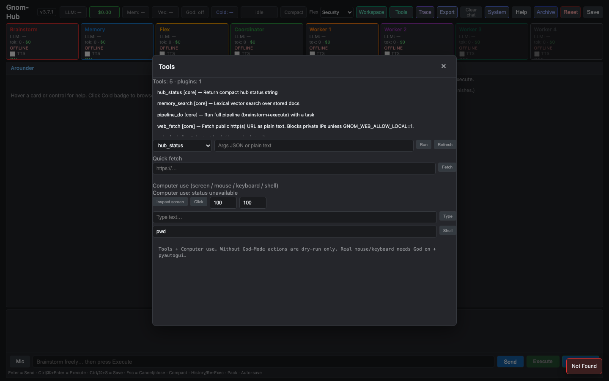

01 · BRAINSTORM
Send = dialogue only
Talk, plan, refine. No silent worker spend until you decide to run.
Local multi-agent control hub
Gnom-Hub is the desktop desk for multi-agent AI work. Send stays dialogue. Workers start when you press Execute — not on every message.
“Brainstorm freely. Execute only when you press Execute.” Product rule — exploration stays cheap and reversible
Product
A local multi-agent control hub for desktop work: visible agents, honest keys, HTML deliverables, safe tools — without cloud lock-in.
Talk, plan, refine. No silent worker spend until you decide to run.
Cost, files, and side effects start with Execute — cancel and cost stay visible.
Agent cards, work boxes, tools badge, light trace — a desk, not a black box.
How it works
One control plane for planning and intentional execution.
User/Key.txt, USB-friendly data, no DockerDesk UI
Agent cards · work boxes · chat — built for real desktop sessions.


Positioning
| Gnom-Hub | Typical agent frameworks | |
|---|---|---|
| Core job | Visible desk · intentional Execute | Graph / autonomy plumbing |
| Send message | Dialogue only | Often starts tools immediately |
| Deploy model | Local venv · no Docker | Often containers / cloud |
| Computer control | Dry-run until God-Mode | Varies · often wide open |
| Best for | Desktop multi-agent ops | Library integration |
Install
Python ≥ 3.10 · FastAPI · UI at http://127.0.0.1:8080/
./scripts/install.shUser/Key.txt with real DEEPSEEK_API_KEY./scripts/start.sh → open desk# Local multi-agent hub — no Docker git clone https://github.com/landjunge/gnom-hub-v1.git cd gnom-hub-v1 ./scripts/install.sh && source .venv/bin/activate # Key.txt → User/Key.txt with DEEPSEEK_API_KEY ./scripts/start.sh # → http://127.0.0.1:8080/
FAQ
A local multi-agent control hub: brainstorm first, execute workers only when you choose.
No. Python venv + FastAPI on your machine. Portable data folder, USB-friendly.
Visible desk and intentional Execute — not unattended full autonomy by default.
Open source
Repo: github.com/landjunge/gnom-hub-v1 · Version 3.10.x · Private-use license